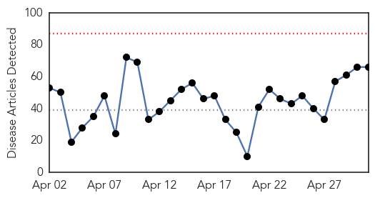
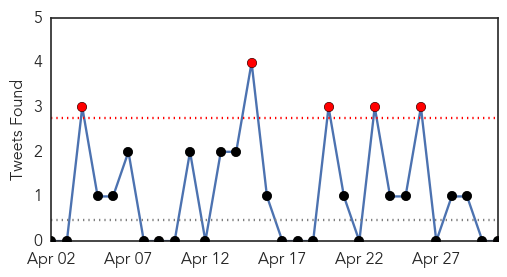
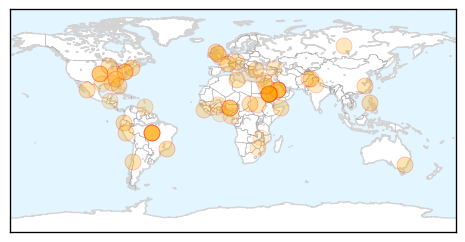
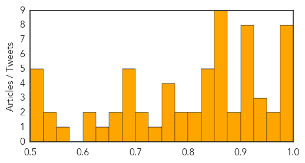

Toggle navigation
Early Warning
Daily Alerts
Unknown
May 01, 2014
Compare to:
-
Dengue Fever
Hemmorhagic Fever
Mold/Fungal Infection
Influenza
Meningitis
Pertussis / Whooping Cough
Middle East Respiratory Syndrome
Cholera
Hepatitis
Chikungunya
Yellow Fever
Bubonic Plague
West Nile Virus
Swine Flu
Ebola
Measles
Mumps
30 Day Trends
Web: 0
alerts
, 0
warnings
Twitter: 5
alerts
, 0
warnings
Top Articles:
Showing top 50 articles...
0.998
Saudi Arabia finds 26 more cases of MERS, Egypt reports first sufferer
0.997
Saudi Arabia finds 26 more cases of MERS, Egypt reports first sufferer
0.997
Saudi Arabia finds 26 more cases of MERS, Egypt reports first case
0.997
Saudi Arabia finds 26 more cases of MERS, Egypt reports first sufferer
0.992
Saudi Arabia finds 26 more cases of deadly MERS virus
0.992
Saudi Arabia Reports 26 More Cases of MERS
0.990
UPDATE 1-Saudi Arabia finds 26 more cases of MERS, Egypt reports first sufferer
0.985
Vaccine against bird flu readied, just in case
0.974
Public health units continue tick surveillance
0.972
Saudi Arabia reports 10 new MERS corona virus cases
0.939
New Virus Related To Smallpox Is Found In Republic Of Georgia
0.939
the edge of knowledge
0.937
News Scan for May 01, 2014
0.925
New vaccine for deadly H7N9 bird flu shows promise
0.917
Chicago Tribune
0.917
Chicago Tribune
0.917
Chicago Tribune
0.917
Chicago Tribune
0.916
Kansas horse euthanized after contracting Equine Herpesvirus
0.913
Stay Away from Camel Milk and Egyptian Tomb Bats
0.900
Fighting east Sudan triggers new displacements
0.898
ACT Health prepares for threat of legionnaires' disease
0.885
TB scare at Motherwell nursery
0.869
Scientists urge World Health Org. not to destroy last smallpox stockpiles
0.866
Residents pile damaged belongings after a storm along the street in the Bristol Woods neighborhood in Pensacola
0.866
China says religious extremists attacked train station
0.866
Gas explosion injures 100 inmates, guards at Florida prison
0.866
Russia calls for talks between opponents in Ukraine under OSCE
0.866
Istanbul police fire tear gas to block May Day protesters
0.866
Quake hits Chile capital Santiago, buildings sway -Reuters witness
0.860
Antibiotic Resistance Giving Killer Diseases Free Rein — Naharnet
0.854
Don't destroy last smallpox stockpiles, scientists urge
0.845
Don't destroy last smallpox stockpiles, scientists urge
0.841
Scientists urge delay in destroying last smallpox - Crescent-News
0.839
EHV-1 outbreak: Protect your ranch horses
0.836
Israeli infectious disease expert: WHO slow recognize global threat of bacteria resistance
0.832
Scientists urge delay in destroying last smallpox
0.825
Commonwealth to Strengthen Sierra Leone’s Health sector « Awoko Newspaper
0.818
Final decision on travel embargo to be announced at World Health Assembly session
0.788
Clashes in Sudan impacts 16,500 people: UN relief agency - Xinhua
0.786
Latest violence in parts of Sudan impacts 16,500 people, UN says
0.765
Latest violence in parts of Sudan impacts 16,500 people, UN says
0.764
Extinct Killer Still Alive
0.760
10 Bajaur Agency women die of mysterious disease
0.750
Antibiotic-resistant germs: A bacterial time bomb
0.726
Equatorial Guinea launches polio immunization campaign
0.723
Delhi heat makes child infection cases go up
0.718
The last-ditch effort to save smallpox research
0.697
Banana disease warning!
0.687
WHO sounds alarm on widespread 'superbug' infections
Top Tweets:
No tweets found for May 01, 2014
Web/News Articles

Tweets

Article Locations

Article Confidences
